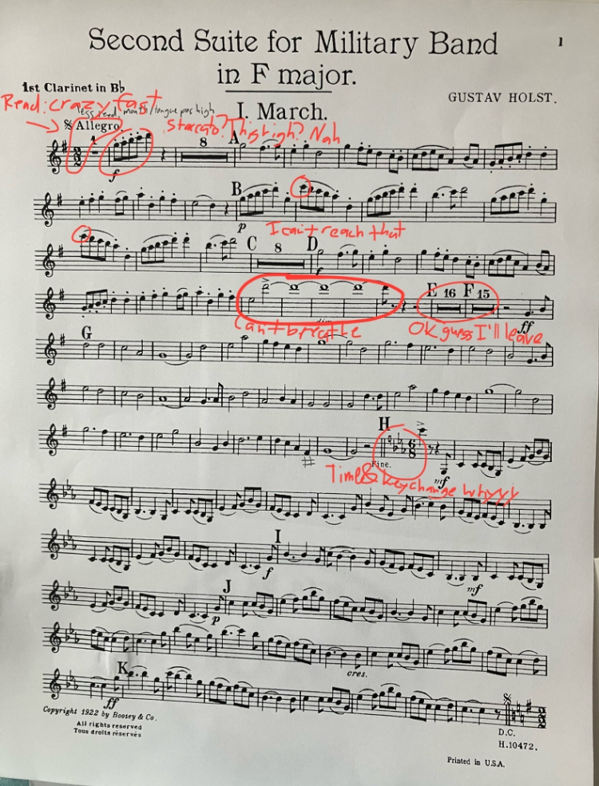
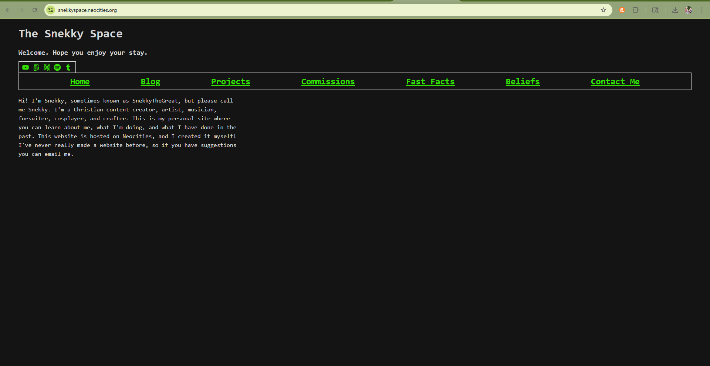

So I'm on the spring retreat with my youth group. We're at an air b&b or something, and there is no water. This is likely the fault of a data center being built nearby. We're right on a lake, but we can't use any of the water from the lake because it's full of pollen, and it's a lake built to cool a nuclear power plant, so it would be a little iffy to drink it. Our leaders are considering moving to a different air b&b, but no one is communicating with them from the company or whatever. I hope we don't have to move because my kayak is inflatable, and it would be annoying to have to pack it up.
On the other hand, we literally have no water. Like at all. We have ice cubes that we can melt but those will run out. We have juice, but I dont like juice that much.
Added a credits section to the bottom of the home page. If I'm using one of your assets and I didn't credit you properly, please don't hesitate to reach out and I'll fix it! I have not had lunch yet. My skinny jeans are cutting off blood flow to my feet and my feet have fallen asleep. Let's see if I can make it up the stairs to the kitchen without falling. If you never hear from me again assume I have died by falling down the stairs due to my feet being asleep from lack of blood flow caused by skinny jeans.
If you're coming from the memesbeansetc. group chat try not to read too far into some of the stuff in the blogs, especially the ones that are late at night or from late february -> early march. Remember that I'm human, I experience emotions, and also that these may not be about you. I've got other friend groups and stuff going on. If you have a concern please DM in a respectful manner.
And this time I think its helping! Last one, the Jornay, gave me little to no actual effect, made it hard for me to sleep, and made me really depressed. I'm on Concerta (?) I think now, which as far as I know seems to be the Adderal of methylphenidates, like the main one most people think of. It seems to be working well! I've been focused, I haven't been as frustrated, and I'm feeling better in general. I'm also planning on sending the link to my website the the group chat, which has for better or worse gotten back together again. I still feel ignored sometimes but honestly that's probably my fault since I complain a lot and it's probably hard to know what to say in response to all my negativity. To be fair to them, I think a lot of our thought processes are fundamentally different by merit of us all being different people. That fact has been a hard one for me to wrap my head around, probably in part due to be homeschooled and not really having friends -- at all, it's not that I had toxic friends before. I just hadn't really had friends since maybe third grade -- during my middle school years. I have a lot of friends now, and being the oldest, there's a lot of responsiblity that I have. I'm supposed to be able to give advice. I assume that when people complain they're asking for advice, since usually when I complain I'm asking for advice, but that's not always the case, and it's gotten me into trouble. I dunno. I should have a counter on my site that actively tracks how many times I've said I dunno on here. Maybe if I can get a bit better at JavaScript I can do that. I've asked on the neocities subreddit for how I can make the blinkies on the top of each page random, so maybe I can learn some while I"m there. I'm also going to increase the line spacing since it's a little hard to read sometimes. Anyways I'm getting off track. Do you think making the text color a bit darker might help with visiblity? I could try that. I'll try that.
Also! Happy Easter! Christ is Risen! I went to the sunrise service this morning and I had brought my sketchbook to draw some stuff but I had forgotten a pencil. Sad. I made a paper crane though! I love making paper cranes. Paper cranes are fun. They can fly if you like grab them by the butt and then pull on the neck gently. They flap their little wings. It's fun. Man when I don't straighten my hair I both look and sound like the thirteenth doctor. Whittaker is a brilliant doctor by the way. Not just cause she looks like me, but she's also a lot like me in that -- ok all the doctors have ADHD that's pretty certain just look at them -- but she's like the most hyperactive of all of them except for maybe eleven, and that's a close call. I haven't seen all of thirteen's episodes yet, but I'm about to get to the whole timeless child bit which plotwise I've always found a bit iffy (yeah I've seen some spoilers sue me) but like it's Doctor Who. If you don't like it then it doesn't have to be canon. I don't like RTD using AI. I don't want Doctor Who to be an AI show. AI generating videos is sucky for the environment and for quality. Like take the lost episodes for instance, if they were to be recreated with AI I bet RTD would be all over that, but it's dumb and bad because real actors and writers and costumes designers and makeup artists and foley artists and mic operators and camera operators and gaffers and all of the jobs that go into filmmaking worked on it! And you're erasing their work because ooh haha funny computer do it for me! No! If you legitimately support using AI for explicitly replacing creative works then I'm sorry but I can't associate with you. Get off my page. "Oh but the lost episodes are lost, they'll never be found" WELL WE JUST GOT TWO NEW EPISODES OF THE DALEKS MASTER PLAN SO SUCK IT!!!!
My bad. Got a bit heated there. OOH OOH AND AND UH I JUST FINISHED A FANFIC I'VE BEEN READING AND ASIUGALFIUHDLKHJA:SODIJ:DLGKH:LADSKJA:SOIJMALSKJ:LSDKJF:ALKSJD:LASKJD:LKDGHLJDHFLAKSHGFLAKSJDGLKDJGHKJDSFGLAKSJDHLKDJFHLKDSJFH I DONT WANT IT TO ENDDDDDDDDDDDDDDD It's called uh hold on I can never remember the name of it because I always just click on it immediately in the email on my phone which cuts off the full title but it's by TheGhostOwl it's called In The Wake Of Fear. Let me link it. There we go. Forgot how to do the tag for a sec. If you like the Magnus ARchives READ IT. READ IT. DO IT. EXCELLENT MASTERFUL WORK RIGHT HERE. TRUST. I'm drawing fanart of it once I get the time. I've got a really vivid mental image of a scene. Well, two scenes. I'll probably draw both of them. Ok I gotta go fix the formatting.
Currently playing the your ai slop bores me game. Very fun. I stopped taking Vyvanse because I wasn't getting a good amount of focus from it, and it was making me shake a lot. I've switched to this relatively new one called Jornay PM, it's supposed to be taken at night and it releases in the morning. I was on the 20mg for a week, and it helped a little bit, but not nearly enough. I was still struggling a lot. I did notice that I was sleeping a bit more lightly. I just took the 40mg like fifteen minutes ago. I hope I can get to sleep and that tomorrow I can get more schoolwork done. I know it's a Saturday tomorrow but I've got a lot of catch up work to do. Another effect I've noticed is that I've been crashing after it wears off in the afternoon, but I think that might be correlation rather than causation. I've been doing a lot of stuff today and yesterday and the stress has been getting to me. I could really go for another seltzer right now but I don't want to get up. I'm also supposed to be reading something for film class rnow (very long reading) and I can't bring myself to do it. I'm so tired right now.
I hate my mother why can’t she leave me alone she’s so nosy and needs to know every single detail about everything like “what did you eat for dinner” “who was there” “what did you talk about over dinner” “what was the Bible discussion about” “Were you being social enough” “was this person there, why not” like please stop talking to me I have had such a long day and I am so drained and have a lot to do tonight and you’re doing the opposite of helping. And she’s started criticizing the way I dress too like “you need to dress more feminine” and “why do you look like a boy in all your pictures” and “do you really have to be so… edgy?” and “stop wearing tails places you’re embarrassing me” when SHES NOT EVEN THERE OR CONNECTED TO ME. Why does it bother her SO much. I’m not doing anything that’s hurting her, and I’m not doing anything that’s hurting myself or anyone else. Can she not be happy for me that I have found a way to dress that I like and fits my style? My nana is happy for me, and she’s politically conservative and you wouldn’t think she would support me breaking out of stereotypical gender roles but she does! She watches and supports my YouTube channel. Meanwhile mom never says anything about me or my channel that isn’t criticism. She’ll say that she’s proud of the stuff that I do but only when I ask her to or put it in her face. I don’t think she actually likes me, she just likes that version of me that she wants me to be.
When I got back from something or other at some point or other today (can't remember) I saw my little brother with my electric bass trying to play along to a song with it. I normally wouldn't have a problem with this, except 1) he didn't ask (even though it's not technically my bass, it's my parents' bass) and 2) his thing is supposed to be guitar. He's been trying to learn guitar lately and while I support that entirely bass is supposed to be my thing. I play both upright and electric, but I'm not going to be able to take the upright with me to college since I'm renting it. I'll likely be able to take the electric to college. I feel like people keep taking my niches. I used to be the smart one when I was in elementary school, but now I can barely write four paragraphs without a struggle. Former friend took my place as the artist in our friend group before it broke up because her homeschool program barely requires anything of her, and she's a freshman, and I'm a junior and I just don't have time. My sister is also better at art in certain styles than I am, though she always has been and honestly I don't resent her for that at all since that's her niche and wasn't really ever mine. With bass, I almost never have time to practice because of how busy I am. My brother shouldn't have time either, but he just ignores everything except practicing guitar or banjo. And now that he's starting to do stuff with the bass, I feel like he's going to take my niche there too. I feel like I'm clinging on to that because I'm not even that good at crafting, and every other niche of mine has been taken besides clarinet and clarinet is a really lame thing to have as a niche. If my brother starts doing bass, then I might not be able to do worship team anymore. I would miss opportunities to see C. Worse, I might be made to leave the electric behind when I go to college so he can use it since there aren't really any other bassists at youth group who could take my place when I graduate. I almost don't want someone to take my place. No, not even almost not wanting that, I really don't. Bass is my thing. It's simple, I'm not even that good at it, but I really like it and my brother is trying to take that from me I feel like. I just want to have a thing that I'm good at that's my own thing that isn't gimmicky like crafting. And I know that I have God and that's what I should have my main identity in, but everyone in my friend group also has their identities in God. It's not really a thing that I specifically can do well, whereas bass is. And if my brother gets better than me at bass I just know he's going to be super condescending like he always is to me despite him being thirteen and me being seventeen. I hate him sometimes.
I was meant to be in bed at 12. I have church tomorrow and I need to wake up early to shower. I still have exams left. I'm starting to see things moving in the corner of my eyes.
It is late. I am tired. I'm supposed to be working on my exams. I've got most of one question done, still have two more left for today. Am I working on it? No. I am pirating music because I don't want to have to rely on spotify so much because screw big tech. yt-dlp is awesome. So far I'm almost halfway done with my main playlist.
I don't think it's fair that I'm cramping and I'm not on my period. I need to keep better track of it cause honestly idek when it's due, but it's not yet. My stomach hurts. I'm not sure what it's from, but it's probably related to stress.
I'm at the library right now. I'm doing my work for my film class, which is a really long reading. It's about sound or something. I'm on page 281 and I'm reading to page 299, but I've been reading since page 263. I really need to start doing this earlier in the week. I didn't eat lunch, and I am very hungry. I already got a bag of potato chips from the vending machine here, but I don't want to spend more money if I can help it. My sister's shift ends in like half an hour, and I can leave then, but I also need to finish reading this. I also wanted to finish the third pocket on the tripp nyc pants, and I almost did. I still have like half of the pocket's flap left. It shouldn't take me very long but I can't exactly do it while I'm supposed to be reading. The quiz on this section is due tonight as well. I mean, technically it's due tomorrow, but tomorrow at 1 am, so basically tonight. I haven't even started on my exams yet. I haven't even looked at them. Not to mention that I'm so hungry I can barely concentrate. Normally my medication makes it so I'm not as hungry, but I guess it's not working today. I want fries. I want boba. Ugh. Maybe I can get boba tomorrow but only if I skip karate. I need to figure out my schedule with Lent and the wednesday services from that. Why is everything so hard?
> be me
> trying to read film studies textbook
> having trouble concentrating because it's late and meds have worn off
> turn on femtanyl playlist to drown out brain sounds
> it works for a bit, read successfully for about five minutes
> mom comes in and starts playing the piano
> it sounds good but it's too much stimulation now
> can't focus anymore because even without femtanyl mom's piano music is still too much stimulus
> cry
seriously though when I practice clarinet which is a necessarily loud and annoying instrument I take it to the room in our house that's the most soundproof. I guess you can't really do that with the piano. Still why does the family desktop have to be right next to the piano room? Why don't I have my own PC? Well because they're too expensive, for sure. Stupid AI companies hogging all the RAM making it expensive as heck. I hope the bubble bursts soon. How will I afford a decent laptop when I have to go to college? I don't have a job. I'm seventeen and I don't have a job. This is really sad. The thing is though I really don't have time for a job. I suppose I'll have to get one over the summer. Maybe I'll have more time my senior year. I should really look at my projected transcript.
It is very late. I need to get up on time for school tomorrow. I was supposed to have a (very short very easy literally only five paragraphs) essay about George Washington's virtues (literally this is sixth grader type stuff) done by Friday (I had all week to do it) and I got an extension to Sunday which is today. Then I spent all day working on my Tripp pants and I didn't do this and my medication has worn off. I don't want to stay up any later because otherwise there's no way I'm going to be able to wake up on time and even now there's no way so I don't even know what I'm doing anymore. I'm just going to go to bed now and hope that I wake up on time because if I don't mom will have two reasons to be mad at me.
Ok don't get me wrong I really like his music, but I'm doing the march from his Suite for Military Band in F major or whatever and it is SO FREAKING HIGH and SO FREAKING FAST like bro there are only two clarinets we can't be expected to do all this (╥﹏╥) I can play it (barely) (with lots of squeaking and pausing and stopping) at less than half speed. Like look at this. Ughhh idk what I'm gonna do. I mean the only thing I can do is practice. So I guess I'm gonna do that.

Wow it's late. Uh. Didn't realize how late it was. Anyways I'm now putting the link for my site in a couple of studios on scratch so that people can test it out and look around, see if they like it yk. I still haven't added actual selfies to the selfies gallery on the home page. I'll have to do that tomorrow since I'm out of screen time on my phone and I don't have any selfies on my computer. Anyway if you're here from scratch, thanks for checking this out! Let me know how you like it, things I could change, that sort of thing. Don't be afraid to be honest of course I need to make this as good as possible for my Dad.
OHMYGOSHOHMYGOSHOHMYGOSH Ok. C asked me if I [good thing], and we're doing it!!! We still have to work out the details but this is VERY GOOD!! I need to look at the [details] and see what we're doing for it. I'm (hopefully) going to [communicate]. AYGDFKUGYELIUGLASHGFKJGYLISGDJFHGANGLDHS THIS IS EPIC
This is my first post on my personal blog on my personal website. Wow. The website is still under construction as I'm writing this, and it's pretty bare bones, but I think it looks ok so far. I'm trying to do this completely from scratch, without asking my dad for help. Making websites and things like that is the sort of thing he teaches in his classes, so I kind of want to try to impress him a bit with this. I dunno. I've taken his creative coding class, so I'm using what I remember from his class, plus whatever I learned messing around on my comicfury site way back when, plus stack overflow. I also wanted to make this so I have some sort of online outlet that isn't so social media infested. Sure, I'll still post on my social media accounts, but here will be sort of my home base. I hope it turns out well when I'm done with it.
